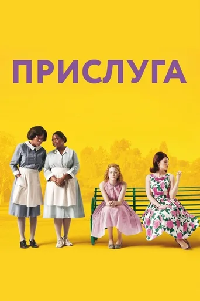

Прислуга 2011
Американский Юг, на дворе 1960-е годы. Скитер только-только закончила университет и возвращается домой, в сонный городок Джексон, где никогда ничего не происходит. Она мечтает стать писательницей, вырваться в большой мир. Но для приличной девушки с Юга не пристало тешиться столь глупыми иллюзиями, приличной девушке следует выйти замуж и хлопотать по дому. Мудрая Эйбилин на тридцать лет старше Скитер, она прислуживает в домах белых всю свою жизнь, вынянчила семнадцать детей и давно уже ничего не ждет от жизни, ибо сердце ее разбито после смерти единственного сына. Минни - самая лучшая стряпуха во всем Джексоне, а еще она самая дерзкая служанка в городе. И острый язык не раз уже сослужил ей плохую службу. На одном месте Минни никогда подолгу не задерживается. Но с Минни лучше не связываться даже самым высокомерным белым дамочкам. Двух черных служанок и белую неопытную девушку объединяет одно - обостренное чувство справедливости и желание хоть как-то изменить порядок вещей. Смогут ли эти трое противостоять целому миру? Сумеют ли они выжить в этой борьбе?
Открыть в каталогеДанные и постеры принадлежат их правообладателям. Этот продукт использует TMDB API, но не одобрен и не сертифицирован TMDB.